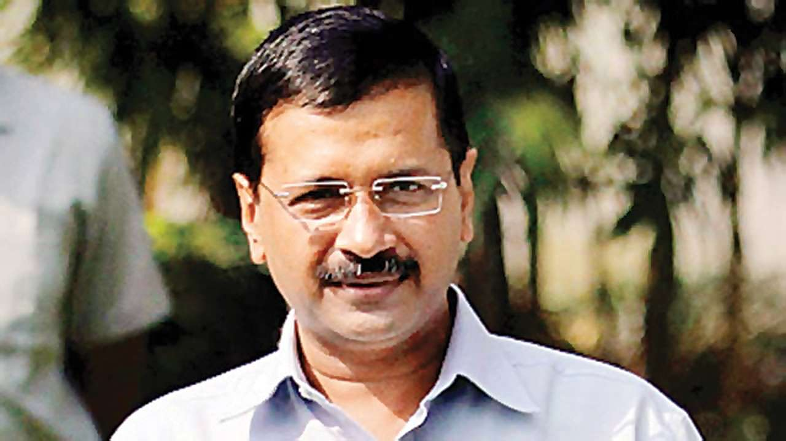
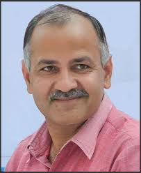
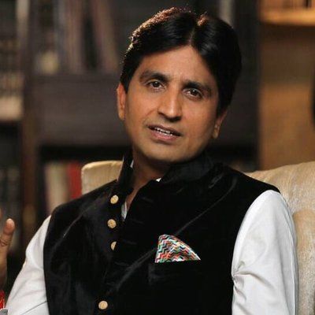
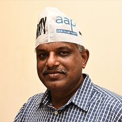

Aam Aadmi Party | |
|  | Arvind KejriwalArvind Kejriwal (born 16 August 1968) is an Indian politician and a former bureaucrat who is the current and 7th Chief Minister of Delhi since February 2015. He previously served as Chief Minister from December 2013 to February 2014, stepping down after 49 days. He is the national convener of the Aam Aadmi Party. His party won the 2015 Delhi Assembly elections with a majority, |
|---|---|
|  | Manish SisodiaManish Sisodia is an Indian politician who has been the Deputy Chief Minister of Delhi since February 2015. He also holds the Finance and Planning, Revenue, Services, Power, Education, Higher Education, Information Technology, Technical Education, Administrative Reforms portfolios in the government of Delhi.[1] Previously, he was briefly a cabinet minister in the Government of Delhi between late December 2013 and February 2014, when he had responsibility for education, PWD, urban development, local bodies and land and building. |
|  | Dr. Kumar VishwasKumar Vishwas (born 10 February 1970) is a Hindi-language performance poet and an Indian politician and National Executive of Aam Aadmi Party.Vishwas has been a guest judge on the Indian Idol television show |
|  | Pankaj GuptaPankaj Gupta is an Indian politician. He is national secretary and member of national executive and election committee of Aam Aadmi Party.Gupta graduated from Motilal Nehru Regional Engineering College, Allahabad in Uttar Pradesh. Before joining Aam Aadmi Party, he worked for various software companies |
Project Developed and Designed
By
Mohandeep Bawa & Paramjeet Kaur Student of Rayat Bahra Campus, Patiala